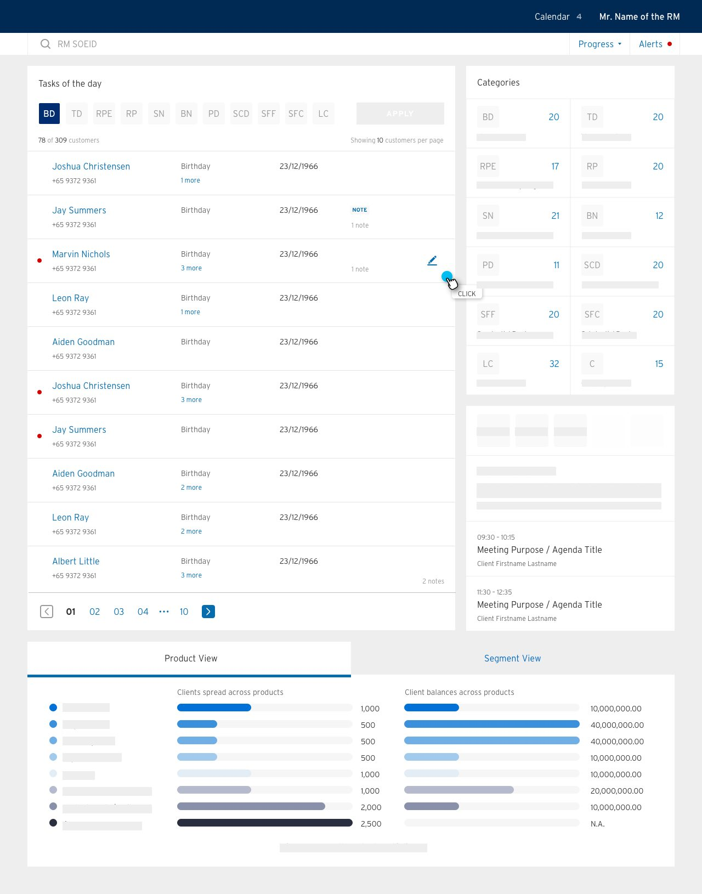

Design is like a language system.
I was chatting with a friend the other day, and she was explaining some Japanese basics to me. Having learnt the hardest Chinese language since before I can remember, my experiences with acquiring English & German, both of which belonging to the Germanic branch of Indo-European languages, has been systematic and taken for granted that both started with learning and reading the alphabetic table.
Her explanation on Japanese language, however, stoke me with a sudden realization that most languages are formed with a structural and component based system. If you’re on the frontline of the fashionable words of design, you’d hear about the term “atomic design” or “design systems” frequently these days. A language can therefore be interpreted as very much similar to the atomic design system that’s at its apogee today. Especially in the context of a Chinese originated language system, the development of which were very much a visual interpretation of the objects themselves. So not only do these languages have a system and atomic structure, it’s carved out of the symbolic meanings such that the visual metaphors takes the precedence.
Take the very famous Chinese character of tree “木”, for example.
